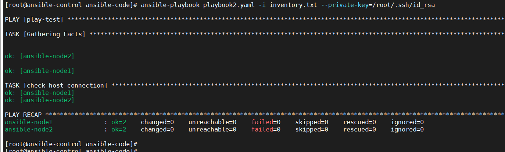
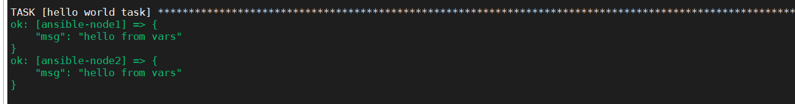
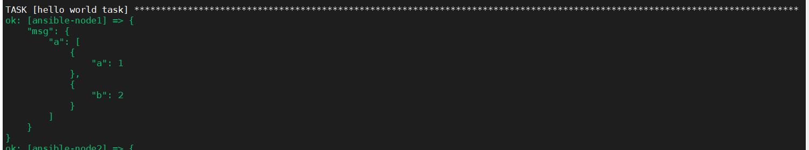
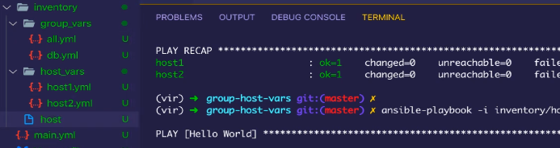

play book的配置文件是使用yaml文件写的
一个paly book基本单位是hosts。hosts下面有name与task两部分组成
- name 指的是这个hosts是是干什么用的
- tasks由一系列小组成。
下面有一个demo的配置文件，就是使用playbook去执行ping命令
hosts: web1
name: play-test
tasks:
- name: check host connection
- ping:
效果

play book单位
常⽤属性
name 属性每个play的名字 hosts 属性, 每个play 涉及的被管理服务器，同ad-hoc 中的资 产选择器
tasks 属性, 每个play 中具体要完成的任务，以列表的形式表达
- become 属性，如果需要提权，则加上become 相关属性
- become_user 属性, 若提权的话，提权到哪个⽤户上
- remote_user属性，指定连接到远程节点的⽤户，就是在远程 服务器上执⾏具体操作的⽤户。若不指定，则默认使⽤当前执 ⾏ ansible Playbook 的⽤户
一个play book中可以有多个play项目，如下,是一个play项目：
- name: the first play example
hosts: webservers
remote_user: root
tasks:
tasks中任务的多种写法
module_name: name=nginx enabled=true state=started
# 多⾏的形式:
module_name: name=nginx
enabled=true
state=started
# 多⾏写成字典的形式:
name: nginx
module_name:
enabled: true
state: started
play book的校验
校验
下⾯校验的⽅法，只能校验PlayBook是否正确，⽽不能校验YAML ⽂件是否语法正确。
ansible-playbook -i hosts myplaybook.yml --syntaxcheck
使用检查yaml的方式，对playbook进行检查
python -c 'import yaml,sys; print yaml.safe_load(sys.stdin)' < myplaybook.yml
单步调试
每次都会执行一个task
// 执⾏Task中的任务，需要⼿动确认是否往下执⾏。
ansible-playbook -i hosts myplaybook.yml --step
模拟执行
检测自己的playbook有无语法错误，是不是能够直接执行，只是一个测试方式
ansible-playbook -i hosts myplaybook.yml -C
-C 其实应该就是--checkout
调试信息查看
ansible-playbook -i hosts myplaybook.yml -VVV
v越多越详细，支持到5个v。执行过程的每一条语句都回输出来。
有个思路就是先限制组再增加日志输出，从而可以定位到报错
ansible-playbook -i hosts checkhosts.yml --limit dbservers -vvv
Variables
定义变量
- name: Hello world
hosts: web1
vars:
greeting: "hello from vars"
tasks:
- name: hello world task
debug:
msg: ""
定义的变量可以在tasks中被引用。

变量也可以定义字典和数组
- name: Hello world
hosts: web1
vars:
greeting: "hello from vars"
demo:
a:
- a: 1
- b: 2
tasks:
- name: hello world task
debug:
msg: ""

变量也可以通过外部进行导入变量
- name: Hello world
hosts: web1
vars_files:
- vars_file/vars/demo.yaml
vars:
greeting: "hello from vars"
tasks:
- name: hello world task
debug:
msg: ""
这样子的好处就是统一管理变量
变量优先级：
简单的来说就是后面覆盖前面。
两种情况，
- 变量都在文件中，前面文件中的变量会被后面文件中定义的相同的变量覆盖
- 外部引用的文件中的变量会被自己文件中后面定义的变量覆盖掉。
group变量与host变量
这里的变量指的是主机变量，比如，主机名、主机密码、主机端口等等。是主机级别的
这里需要一个文件和两个文件夹。
一个文件是host文件，这个文件中，介绍了有多少主机，就和/etc/passwd一样，介绍了有多少个用户，而另外两个文件夹，分别是group文件夹和host文件夹。
源investory文件
内容如下：
[web]
ansible-node1 ansible-connection=ssh ansible_user=root
[db]
host1 ansible-connection=ssh ansible_user=root http_port=443
ansible-node3 ansible-connection=ssh ansible_user=root
ansible-node4 ansible-connection=ssh ansible_user=root
进行划分

其中host中，只有节点的主机名
[all]
ansible-node1
ansible-node2
ansible-node3
ansible-node4
host1
group_vars中包含了分组变量文件，每个文件包含了一个分组的变量，比如上文中的db.yaml.
ansible-connection: ssh
ansible_user: root
host_vars文件中，包含了多个文件，其中的每一个文件代表的都是一台节点机的单独配置，你可以将其单独配置写入其中
http_port
ansible.cfg
这个文件是配置文件，我们可以将investory配置文件写入，这样子执行的时候，就不用用参数i去指定路径了。
有三个地方可以寻找这个文件，优先级从前到后i
- 首先会在执行ansible的当前目录寻找这个文件
- 会查找环境变量中的
ANSIBLE_CONFIG查找这个配置文件 - 最后才会使用
/etc/ansible中的ansible.cfg这个配置文件。
ansible适合放的是ansible级别的变量，比如private-key的目录和username等。
过滤器
默认过滤器
为没有定义内容的变量设置一个变量
＂HOST＂: ＂localhost＂,
如果变量database_host已被定义，那么直接使用这个值。没被定义，则会设置成localhost这个默认值
文件路径的过滤器
basename过滤器可以让我们从全路径中提取文件名部分
过滤器编写
TODO
lookup模块
与系统进行交互，是一个函数，被的jinj2模板所调用
格式统一都是

file
获取系统的相应文件的内容

在playbook中就可以调用key_matrial这个变量获取到对应文件中的密钥信息
pipe
执行一条命令，获取这条命令的结果

env
获取到系统变量

template
lookup会让你指定一个Jinja2模板文件，然后返回这个模板渲染的结果.
 \
\
csvfile
获取csv中对应位置的数据
dnstxt
获取对应dns的ip

redis_kv

include
include 获取到的是整个文件
静态引用